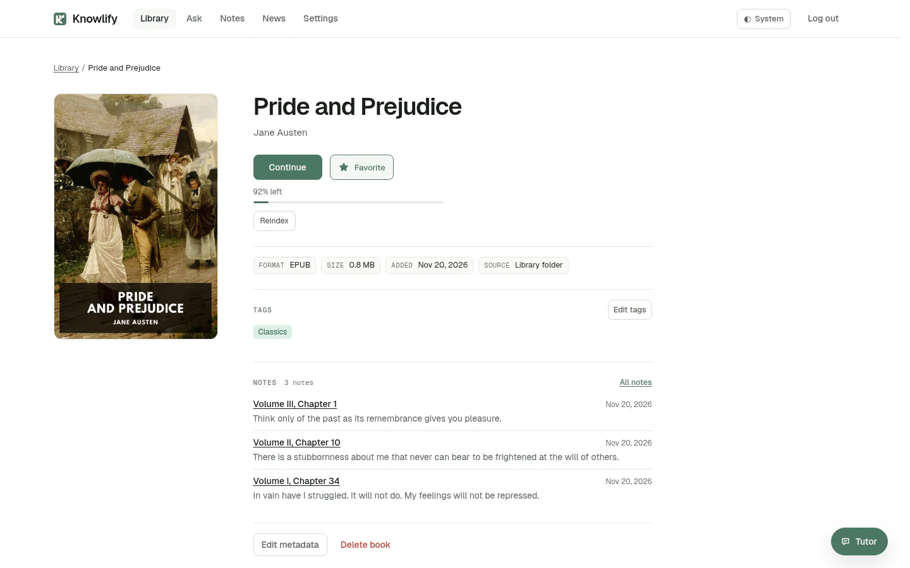
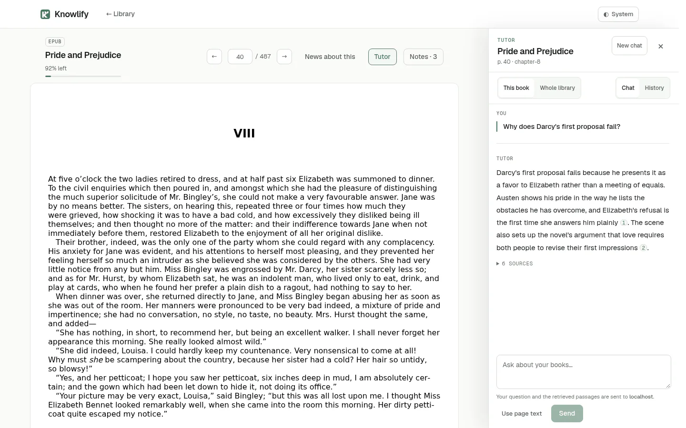
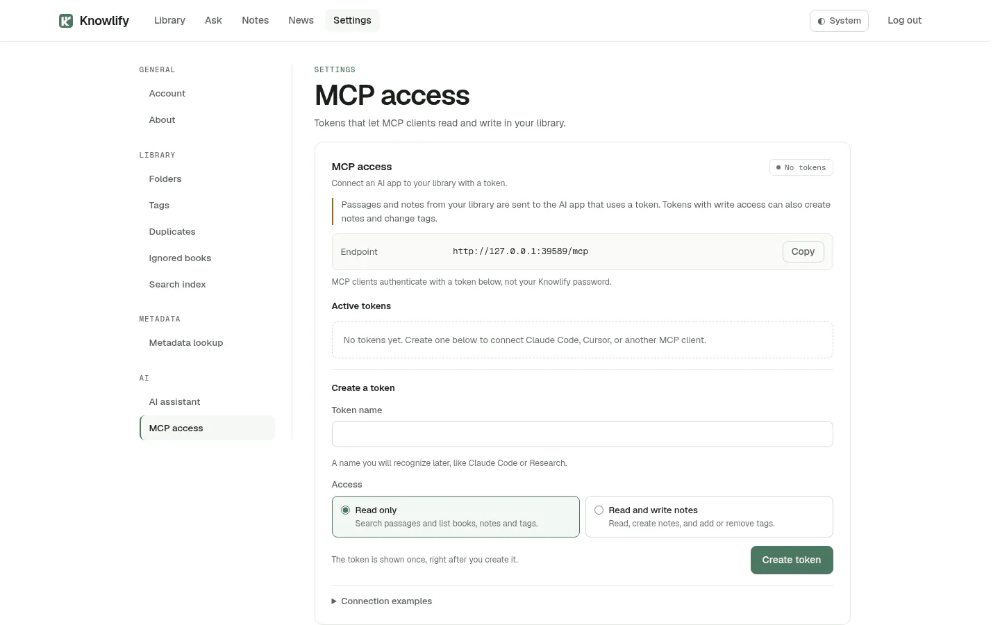

The library, running locally with 18 public-domain books. The interface follows the system theme.
01
What it is
A library, not a storefront.
Knowlify is a knowledge hub for the books you already own. Point it at a folder. It reads covers and metadata in the background and leaves the files where they are. Notes, tags, reading progress and the search index live in a local SQLite database.
Use it as a private catalog, a reading desk and a place to collect what you want to remember. There is no store, no recommendation feed and no cloud account. The server has one user.
One library, three ways to read: the browser, the desktop app and KOReader. The desktop app can keep its own library on your computer or connect to your server. If you choose, AI tools can also read the library through an MCP endpoint.
01BooksPDF, EPUB
02ReadingProgress, notes, quotes
03ShelvingTags, favorites, filters
04DiscoveryFTS5, optional embeddings
05AssistantOptional LLM tutor
06ClientsOPDS, KOSync, MCP
07NewsRSS feeds you choose
02
A short tour
Built for the way a library is used.
Browse, open, read, annotate and come back later. The details below come from the running app, not from a mockup.
Favorites, with filter chips and a count in the toolbar.
Library
A shelf you can shape.
Switch between a grid of covers and a table of facts. Filter by format, tag, favorite, reading state, folder or notes. Sort by the last book you opened, or by title and author.
Grid and table views
Tags with nine colors
Filters kept in the URL
Bulk actions for tags, favorites and deletion

Book details, with recent notes and editable metadata.
Book details
Every book has a record.
The details page collects the cover, author, series, year, publisher, language, ISBN and your reading progress. Edit any field, add a custom cover, and reset it later. The EPUB or PDF file does not change.
Metadata overrides that survive rescans
Online lookup only when you ask
Recent notes on the same page
Reader and tutor
Read with the tutor at hand.
The reader opens EPUB and PDF files in the browser or the desktop app and saves your position. Select a passage to ask about it, or open the tutor with Alt+T. Answers cite the passages they use.
EPUB text size control
Notes side panel
This book or the whole library

The tutor answers from retrieved passages and marks the citations.
Notes grouped by book, newest note first.
Notes
Notes stay with the book.
Save a thought or a quote from the reader. The Notes page groups everything by book and searches across the whole library. Each note keeps its location, so you can return to the page that produced it.
Quotes and free notes
Search across every book
Collapse a book, or load the rest of its notes

MCP access without tokens. A new token is shown once.
MCP
Your library, inside your AI tools.
Create a token in Settings. Claude Code, Cursor and Claude Desktop can then search passages, list books, read notes and, with write access, add notes or tags. There is no tool that deletes data.
Read-only or write_notes scope
Only a SHA-256 hash is stored
Revocation takes effect at once
Search
Keyword and meaning.
SQLite FTS5 finds passages by keyword. With embeddings enabled, the same index also finds passages by meaning. Use a local model or an HTTP endpoint you control.
Index
Built in the background.
A worker pool extracts text and cover images. Settings shows the queue, the rate, the estimated time and a pause control. A failed book does not stop the library.
Tutor
Answers with sources.
The optional tutor retrieves passages first, then asks the LLM. Citation markers link back to the text. The default persona uses the Feynman method and can be edited in Settings.
03
Local first
Your data stays yours.
Knowlify is software you run, not a service you subscribe to. The database, covers, notes and reading progress live in a folder you control.
Source folders are read-only.
Knowlify indexes the folders you add and never writes to them. Delete a book from a source folder in the app and the file stays where it is. An external share or a mounted disk is safe from the library.
Secrets are protected at rest.
The password is stored as a scrypt hash. MCP tokens are stored as SHA-256 hashes and shown once. The LLM key is encrypted with AES-256-GCM, and settings return only whether a key exists. A malicious provider already holds the key and can echo it in a streamed reply, which the app does not redact.
No analytics. No telemetry.
The app does not include an analytics SDK. This page loads only files from the same origin: no CDN, no hosted font and no tracker.
What can leave the machine
Book files and covers
Only your clients Stored on disk, with source folders treated as read-only. Authenticated web and OPDS clients can download books and covers. MCP clients receive text and metadata, not file paths or cover images.
Library and search index
Only your clients Stored in data/ on your disk. Authenticated web, OPDS and MCP clients can query the library and its search index. An MCP client's provider receives what the client asks for.
Book text for embeddings
When configured An HTTP embedding endpoint receives passage text during indexing. The local model runs on the machine.
Title, author or ISBN
On request Only when you search for metadata. Open Library receives the query; Google Books is the fallback.
Questions and passages
On request Only when you use the tutor. A remote LLM provider receives the question and the retrieved passages.
Passages and notes
When connected Only when an MCP client asks for them. The client and its provider receive the response.
RSS feed requests
When fetched The feed URLs you add are requested. Article text is sanitized and stored locally.
Every outbound request is a deliberate setting or an action in the interface. The server blocks SSRF for user-supplied URLs and keeps the limits in the code, not in a policy page.
04
Quick start
Run it on your machine.
The published image contains the API and the web app. Compose mounts your ebook folder read-only and keeps the database in ./data.
Save the Compose file
Use the example below. Set KNOWLIFY_PASSWORD and KNOWLIFY_LIBRARY_DIR in your shell or in a local .env file.
Start the container
The first scan starts at boot. The library folder is mounted at /library and never written to.
Open the library
Go to http://localhost:8787 and sign in as admin with the password you set. Add more folders in Settings, Folders.
Keep it
Back up ./data. It holds the database, uploaded books and covers. To update, pull the image and restart the service.
Build from source instead
You need Node.js 26 or later and Docker. The web app and the server are built inside the image.
git clone https://github.com/Victor-Mazzei/Knowlify.git
cd knowlify
cp .env.example .env
# Set KNOWLIFY_PASSWORD and KNOWLIFY_LIBRARY_DIR in .env.
docker compose up -d --build
export KNOWLIFY_PASSWORD='choose-a-long-password'
export KNOWLIFY_LIBRARY_DIR=/path/to/your/ebooks
docker compose up -d
05
Connect your tools
One library, more than one window.
Knowlify speaks the protocols that existing readers and AI clients already use. Use the same account password for KOReader. Create a separate token for MCP.
KOReader
Browse and sync on an e-reader.
KOReader opens the OPDS catalog as a book list. KOSync carries the reading position back and forth. Both use the account password, not an MCP token.
OPDS catalog
http://YOUR-SERVER:8787/opds
KOSync
http://YOUR-SERVER:8787/kosync
Account
Your Knowlify user and password
Use HTTPS when the server is reachable from outside your network. A reverse proxy can terminate TLS.
MCP
Ask from Claude Code, Cursor or Claude Desktop.
The endpoint is stateless Streamable HTTP. Create a token under Settings, MCP access. The token is shown once. Replace the loopback address with the address of your server.
The read scope exposes search, books, notes, tags and index status. The write_notes scope adds note creation and tag changes. No tool deletes data. Your AI app and its provider receive the passages and notes they request.
06
Desktop and mobile
On the desk. In the bag.
The Tauri desktop app wraps the same React UI in a native window for Linux, macOS and Windows. It has two modes: local and remote. The web UI also reflows to a phone browser.
Local mode
Your library, on this computer.
The app runs its own Knowlify server with the bundled Node.js. The database, uploaded books, notes and reading progress stay in the app data folder. You do not install Node.js.
Remote mode
Your server, from this computer.
The app connects to the Knowlify server you already run. The browser and the desktop app then use the same library, notes and reading progress.
Connect
Connect the desktop app to your server.
Start the server. Run the Knowlify server, for example with Docker Compose.
Open the desktop app. Select Remote.
Enter the address. Use the server URL, your user name and your password.
Change it later. Use Connection settings in the lower right corner.
Use an HTTPS address when the server is outside your home network. The app accepts plain HTTP only for local addresses.
The server keeps the library, books, notes, reading progress, search index and settings.
The desktop app saves the connection details on this computer.
KOReader reads the same catalog through OPDS and keeps its own reading position through KOSync.
The desktop app wraps the same library in a native window on Windows, macOS and Linux. Choose the installer for your system. It can run its own server or connect to the one you run.